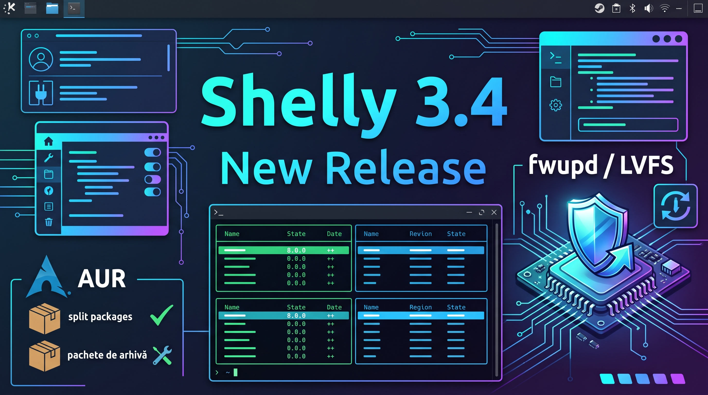

Shelly 3.4 a fost lansat: Suport integrat pentru actualizări de firmware (fwupd / LVFS), tabele personalizabile și remedieri pentru pachetele split din AUR

La doar câteva ore după publicarea versiunii de mentenanță 3.3.1, dezvoltatorii managerului grafic de pachete Shelly (dedicat Arch Linux și derivatelor sale) au lansat versiunea majoră 3.4. Principala noutate este o pagină dedicată administrării firmware-ului hardware prin intermediul fwupd și LVFS, însoțită de o interfață mai flexibilă și de corectarea compilării pachetelor split din AUR.
1. Administrarea firmware-ului prin fwupd și LVFS
Shelly 3.4 introduce o pagină opțională Firmware care permite instalarea, retrogradarea (downgrade) și reinstalarea firmware-ului pentru componentele hardware suportate (inclusiv UEFI/BIOS și periferice), folosind ca sursă Linux Vendor Firmware Service (LVFS):
Activare la cerere și integrare D-Bus: Funcția este dezactivată implicit și poate fi activată din ecranul inițial de bun venit sau ulterior din Settings. Dacă pachetul
fwupdlipsește din sistem, Shelly îl instalează automat la nevoie, iar activarea prin D-Bus elimină necesitatea pornirii manuale a unui serviciu systemd separat.Protecții și verificări de siguranță: Înainte de scrierea firmware-ului (flashing), Shelly afișează un dialog explicit de confirmare cu versiunea vizată, dimensiunea descărcării, timpul estimat și avertismentul privind indisponibilitatea temporară a dispozitivului. Pentru sistemele cu criptare completă a discului (full-disk encryption), utilizatorul trebuie să confirme explicit că deține cheile de recuperare (recovery keys) înainte de a continua.
Monitorizare în timp real: Descărcările sunt verificate prin sume de control (checksum), progresul este afișat în timp real, sistemul monitorizează starea bateriei și întreruperile daemon-ului
fwupd, iar la final oferă opțiunea de repornire imediată sau amânată.
2. Personalizarea interfeței și finisaje ale temei Pearl
Coloane configurabile în tabele: Tabelele de pachete permit acum afișarea, ascunderea sau reordonarea coloanelor prin drag-and-drop. Preferințele sunt salvate individual pentru fiecare tabel și restaurate la repornirea aplicației.
Redesign și tema Pearl: Paginile Settings și Flatpak au fost reproiectate, barele de unelte au fost uniformizate, iar tema integrată Pearl a primit corecții atât în modul luminos, cât și în cel întunecat (fundaluri rotunjite ale listelor, anteturi de tabele, margini de butoane și spațieri).
3. Compilarea corectă a pachetelor split din AUR
Rezolvarea directorului de lucru: Anterior, instalarea unui singur pachet dintr-un set split-package din Arch User Repository (AUR) putea eșua deoarece funcțiile ulterioare
package()rulau dintr-un director de lucru greșit.Comportament aliniat cu
makepkg: Shelly 3.4 compilează acum întregul set split-package într-o singură trecere (urmând comportamentul standard almakepkg), dar instalează efectiv doar pachetele solicitate de utilizator.